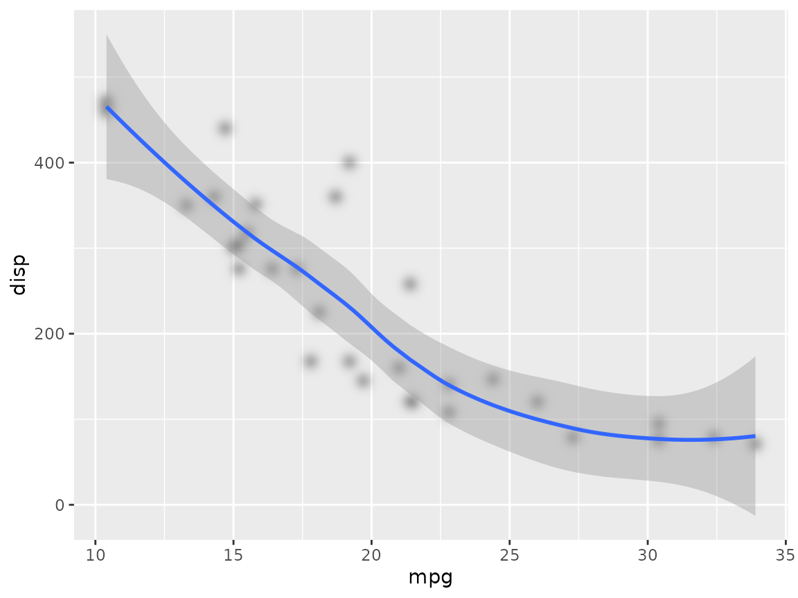

The ggfx package is a way to gain access to pixel-level image filters in R plotting, especially when plotting with ggplot2. This document will give a short introduction to what image filters are, and how to use them through ggfx. It is assumed that you have some familiarity with ggplot2 as the ggplot2 code will not be explained in detail.
Filters are basically functions that take in image data and return a new image. One of the more well-known examples are those available in photo apps such as Instagram, or video apps such as FaceTime. There is basically no end to the effects you can achieve, but some are obviously more useful than other. Filters work by changing the pixel color value of the input image through various means and can incorporate other images as part of the operation.
Since filters work on the pixel level they are not an obvious fit for vector graphics such as the graphics engine in R. This, however, does not mean that it is impossible and e.g. the SVG specification contains a bunch of different filters. The way that they integrate into the rendering of SVG’s is that vector graphics with filters applied are rendered off-screen, run through the filter, and then added to the final render.
The same can be done with R graphics through the grid graphics system (sorry, base graphics users), and this is exactly what ggfx does.
Since there is no concept of filters build in to either grid or ggplot2 the API of ggfx might seem a little strange at first, but it is created in this way to provide a great deal of flexibility. Creating alternative geoms and grobs for everything exposed in ggplot2, grid, and all the packages in the extended ggplot2 ecosystem is simply unfeasible so something else had to be done that was compatible with both the grid and ggplot2 API.
Almost everything you’ll be exposed to in ggfx is collected in the with_*() functions. These functions take as their first argument something to apply the filter on, e.g. a geom, a grob, or a full ggplot, as well as a bunch of other arguments related to controlling the filter. For example, to add blur to a geom you would do this:
ggplot(mtcars, aes(x = mpg, y = disp)) +
with_blur(
geom_point(),
sigma = unit(1, 'mm')
) +
geom_smooth()
We observe that using with_blur() retain the ggplot2-ness of the object as it can still be added to a ggplot, and other layers can still be added afterwards. Further, we see that the blur filter is only applied to the point layer and not to the smooth layer or any other element in the plot (which is what we want).
Now, the with_*() functions can be used with other objects besides layers. To blur the whole plot simply wrap it around the full ggplot object:
p <- ggplot(mtcars, aes(x = mpg, y = disp)) +
geom_point() +
geom_smooth()
with_blur(p, sigma = unit(1, 'mm'))
#> `geom_smooth()` using method = 'loess' and formula 'y ~ x'At this point I assume you’ve guessed how to use it with a grob:
library(grid)
circle_left <- circleGrob(x = 0.25, y = 0.5, r = 0.2)
circle_right <- with_blur(circleGrob(x = 0.75, y = 0.5, r = 0.2),
sigma = unit(1, 'mm'))
grid.newpage()
grid.draw(circle_left)
grid.draw(circle_right)While some filters are stand-alone in the sense that they purely depend on the object they are applied to along with different settings, others combine multiple objects. To use these you need to be able to reference layers somehow. All with_*() functions takes an id which identifies this particular layer. By default, if you provide an id to a layer it will not be drawn as it is assumed that the purpose is to use the layer as part of some other filter. This can be changed by setting include = TRUE. A special case is wanting to use an object which have not been subjected to a filter. This can be done using as_reference(), which will assign an id to the unaltered object an turn off rendering of it.
We’ll illustrate all this using with_blend() which provides a wide variety of ways to blend two layers together:
checker <- expand.grid(x = 1:6, y = 1:6)
checker <- checker[checker$x %% 2 == checker$y %% 2, ]
ggplot() +
as_reference(
geom_tile(aes(x = x, y = y), checker),
id = 'pattern'
) +
with_blend(
geom_text(aes(x = 3.5, y = 3.5, label = '🚀GGFX🚀'), size = 15),
bg_layer = 'pattern',
blend_type = 'xor'
)As we can see, simply referencing an already created reference by name allows it to be used by another filter. The xor filter keeps the content of both layers but only in places where the other layer is empty, creating an effect that would be quite hard to obtain without any filter effects.
You don’t need to reference a layer though - you can pass in an existing raster object instead:
volcano_raster <- as.raster((volcano - min(volcano)) / diff(range(volcano)))
ggplot() +
with_blend(
geom_text(aes(x = 3.5, y = 3.5, label = '🚀GGFX🚀'), size = 15),
bg_layer = volcano_raster,
blend_type = 'copy_green',
alpha = 'src'
)You can also provide a function that takes the dimensions of the area in pixels and returns a raster.
Some filters allow parameters to vary across the image. For example with_variable_blur() allows you to change blur amount across the layer as opposed to the fixed with_blur(). The way this works is that with_variable_blur() takes other layers in that encode the values to use in its pixel values. One can use different channels from the layer for this, e.g. the amount of green in a layer can control the amount of vertical blur, while the overall luminosity of the layer could control the horizontal blur. Selecting a channel to use from a reference can be done using one of the provided ch_*() functions (e.g. ch_green() and ch_luminance() for the examples above).
We can show this by using the waved checker-pattern created above as input to a variable blur:
ggplot() +
with_blend(
geom_tile(aes(x = x, y = y), checker),
bg_layer = wave,
blend_type = 'copy_red',
alpha = 'src',
id = 'wave-checker'
) +
with_variable_blur(
geom_abline(aes(intercept = -6:6, slope = 1)),
x_sigma = ch_hue('wave-checker'),
y_sigma = ch_luminance('wave-checker'),
x_scale = unit(3, 'mm')
)